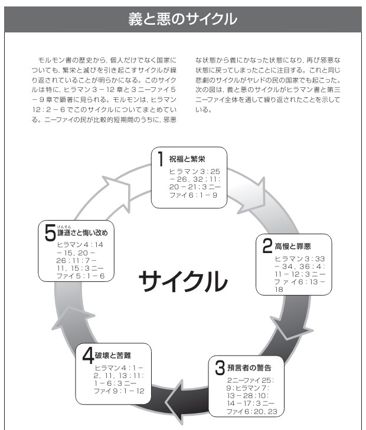

@オンライン (Zoom)接続情報
https://us02web.zoom.us/j/84905838829?pwd=L3RJakVwRVdYTitIL2NtL0crUzA0QT09
ミーティングID: 849 0583 8829
パスコード: kanagawa
| 週 | 日付 |
読書範囲 |
会場 |
デボーショナル | 私に従ってきなさい |
| 5 | 5月8日 | 第37章：ヒラマン 10-12 第38章：ヒラマン 13-16 |
対面＋オンライン | 京谷兄弟 | 9月2－8日：「主を思い起こす」 ヒラマン7－12章 9月9－15日：「胸躍る大いなる喜びのおとずれ」ヒラマン13－16章 |
1.正しかれ 夜よは明けぬ
迎えよ 光と自由
天使は われらの行ない
書きています 義ぎをなせ
※｛力尽つくし 霊尽つくし
自由のため 戦え
強く明日を 望みつつ
神は守る 義ぎをなせ}
2.正しかれ 鎖とれ
奴隷どれいは枷かせ はずさる
悩み消えて 望みあり
真理は進む 義ぎをなせ
※ 繰り返し
3.正しかれ 恐れずに
進め，目当ては 見ゆる
やがて涙も 乾かわかん
恵みは待つ 義ぎをなせ
※ 繰り返し
詞：不詳（1857） 曲：Ｅ・カイアルマーク
申命記 6:17–18 ヒラマン書 10:4–5
◎開会の祈り
◎デボーショナル 京谷姉妹
＝＝＝＝＝＝＝＝＝＝＝＝＝＝＝＝
概略
主は忠実な子供たちに喜んで大きな祝福を下さる。これらの祝福は偶然に与えら れるものではない。神から祝福を受ける一つの方法は，神 の真理について深く考えることである。深く考えた結果とし て啓示がもたらされる。深く考えて啓示を受けたニーファイ の模範を研究する。ニーファイが示した力と忠 実さの模範は，ニー ファイ人の弱さとは対照的である。
レーマン人の預言者サムエルは，ゼラヘムラの町の城壁の 上から福音を宣 の べ伝えたとき，神から奇跡的な守りを受け た。サムエルは救い主の降誕と死に関 する具体的な預言としるしを伝えた。イエス・キリストの降 誕に備えるようニーファイ人に警告したサムエルと同様，末日 の預言者もわたしたちが救い主の再臨に備えられるよう助け てくれる。末日の預言者のメッセージとサムエルの メッセージに見られる共通点，また末日の預言者に対する世 の人々の反応とサムエルに対するニーファイ人の反応に時と して見られる共通点は何か？サムエルの言葉を信じることで信仰，悔い改め，心の 変化という祝福を享受した人々の模範に倣いたい。教義と原則
○主にかかわる事柄について深く考えた結果として，啓示がもたらされる（ヒラマン 10：1－ 4）。
● 結び固めの力は地上でも天でも結び，解く（ヒラマン 10：4 －10）。
○主は民を懲らしめることで，御自身を思い起こすように働きかけられる（ヒラマン 10：14 －18；11 章；12：1－3）。
●神を忘れた結果として破滅が，悔い改めて善い行いをした結果として救いがもたらされる（ヒラマン 12 章）。
[深く考える]
●ニール・A・マックスウェル長老（1926 －2004 年, 十二使徒）
「ほとんどの人にとって，深く考えるのは容易なことではありません。それはぼんやりしたり，空想にふけったりする以上の行為です。深く考えることで，人は息抜きをするのではなく，思いを集中したり，行動を起こしたりします。時間を確保し，環境を整え，傲慢(ごうまん)な態度を捨てなければ，深く考えることはできません。アルマの言葉に倣えば，『場所を設け』なければならないのです（アルマ 32：28）。深く考えるのにどれほどの時間をかけたかよりも，どれほど集中したかが大切です。気が散るような環境で熟考することはできません。」
（That Ye May Believe〔1992 年〕，183）
●ダリン・H・オークス長老（十二使徒）
「情報が発展して知識となり，知識が熟して知恵となるためには，静かな時間，祈りの気持ちで深く考える ことが必要なのです。」（『リアホナ』2001 年 7 月号，100）
[根気よく主の業に携わる]
●ニール・A・マックスウェル長老（1926 －2004 年, 十二使徒）
「イエスとその業に心を集中するならば，わたしたちの喜びと堪え忍ぶ力はともに増し加わります。……ニーファイは利己的に『自分の命』を得ようとせず，むしろ神の御心を行おうとしました。その結果，特別で揺るぎない力を受け，根気よく，勤勉に努力することができたのです。ニーファイはどの方向を向けばよいかを知っていました。神を仰ぎ見たのです。」
（If Thou Endure It Well 〔1996 年〕，116）
[主の思いに反することを求めない] ヒラマン 10：5
●ニール・A・マックスウェル長老（1926 －2004 年, 十二使徒）
「したがって，心からの純粋な祈りで大切なことは，天の御父に願い求めるというよりはむしろ，まず，御心を知り，その御心に歩みを合わせる過程のように思われます。……
実際わたしたちが神の御心に従った行動を取るとき，神はヒラマンの息子ニーファイに対してされたように，天から特別な祝福を注いでくださるのです。」
（All These Things Shall Give Thee Experience 〔1979年〕，93 － 94）
●デール・G・レンランド長老（十二使徒）
「天の御父とイエス・キリストの慈しみと偉大さについて深く考えると，御二方への信頼は深くなります。神が自分の父であり，自分が神の子であることが分かるので，祈りも変わってきます。主の御心を変えようとするのではなく，自分の思いを主の御心に沿わせ，求める者に主が与えようとしておられる祝福を受けるようになるのです。へりくだり，汚れをなくして，確固としたキリストのような者になることを切望するようになります。そのように変わっていくと，天からの祝福をさらに受けるのにふさわしい者になります。」
（デール・G・レンランド「神の慈しみと偉大さを深く考える」9'30"『リアホナ』2020年5月号，43）
=============
■ヒラマン 10：4－40 結び固めの力と鍵 (7節) ～ 家族が永遠に結ばれること
●ラッセル・M・ネルソン大管長
「エンダウメントや神殿のほかの儀式を受ける備えをするに当たって，わたしたちは，神権の結び固めの権能について理解しておく必要があります。イエスは，はるか昔に，御自分の使徒たちに教えておられたときに，この権能について触れて次のように言われました。『あなたが地上でつなぐことは，天でもつながれ……るであろう。』〔マタイ 16：19〕
ここで言われたものと同じ権能が，この末の日に回復されています。ちょうど神権が永遠であり，初めもなく終わりもないのと同様に，家族を永遠に結びつける神権の儀式の効果も永遠なのです。」
（『リアホナ』2001 年 7 月号，37－38）
==========================
■ヒラマン 11：8－11 預言者の祈り
8 そして
9 そこでさばきつかさたちは，
10 「おお，
11 おお，
12 おお，
13 おお，
14 おお，
15 まことに，おお，
16 おお，
17 そこで，
18 そこで
==========================
■ヒラマン 12：1－6 高慢の悪循環
＊祝福を受けているその時ですら人は主を忘れるのはなぜか？
●エズラ・タフト・ベンソン大管長 ～ 高慢に含まれる様々な側面
「高慢は本質的に闘争的な性質を持っています。わたしたちは，自分の思いを押し通して，神の御心に刃向かうことがあります。自分の高慢な心を神に向けるのは，『御心ではなく自分の思いが成るように』と言っているのも同じことです。……
高慢な人は，自分の生活を律する神の権能を認めることができません（ヒラマン 12：6 参照）。自分なりに真理を解釈して，神の偉大な真理に挑むのです。また，自分の能力をもって神権の力に対抗したり，自分の功業を挙げて偉大な神の御業に対抗したりするのです。
……高慢な人は，神に対して，自分の考えに同意するよう求めます。神の御心に合わせて，自分の考えを変えるなどということは念頭にありません。……
高慢の行き着く結果として，権力と『利益と世の誉れ』を求めて作られた秘密結社を挙げることができます（ヒラマン7：5；エテル 8：9，16，22 －23；モーセ 5：31）。高慢の罪の実である秘密結社は，ヤレド人とニーファイ人の文明を崩壊させました。そしてほかにも多くの国の堕落の原因となり，それは今後も続いていくことでしょう（エテル 8：18－25）。」
（『聖徒の道』1989 年 7 月号，4 － 6）
●ハロルド・B・リー大管長（1899 －1973 年） 「ぜいたく」の試練と人生で経験するほかの試練の比較
「わたしたちは試されます。恐らくわたしたちは自分が経験している試練の厳しさを理解していないでしょう。初期の教会には，殺人を犯したり，暴徒化したりする人々がいました。聖徒たちは砂漠へ追いやられました。彼らは飢え，着る物もなく，寒さを経験しました。わたしたちは彼らがわたしたちに与えてくれたものを受け継いでいます。しかし，そのような受け継ぎを使って何をしているでしょうか。今日，わたしたちは世界の歴史でこれまでに一度も目にしたことのなかったようなぜいたくに浸って生活しています。恐らく，これまでの教会の歴史で一度も経験したことがないような厳しい試練と呼べるかもしれません。」
（ダール，“Fit for the Kingdom, ”Studies in Scripture ， 第 5 巻，369 で引用）
●ジョー・J・クリステンセン長老（七十人） 高慢は不正な比較を生む，また破綻につながる
「高慢だと，自分を他人と比較するため，度を超えて心配するようになります。例えば，自分の知的レベルはどれくらいか，自分が身に着けるジーンズあるいはその他の衣料品，『高価な衣服』のブランドは何か，どの組織に属しているか，町のどちら側に住んでいるか，お金は幾ら持っているか，人種は何かあるいは国籍はどこか，どんな車を持っているか，さらにはどこの教会に属しているか，どれくらいの教育を受ける特権にあずかったかなど際限なく心配するようになるのです。
聖文の中には，高慢が増大した結果，個人，国家，そしてある場合には，教会そのものが滅びることになったという記載が随所にあります。……計算すると，繁栄と平和のサイクルは，モルモン書を通じて少なくとも 30 回，人の高慢が原因で断ち切られているのです。」
（One Step at a Time: Building a Better Marriage, Family, and You〔1996年〕，138 －139）
「義と悪のサイクル」

============= =============
■ヒラマン 12：23－24 悔い改めと善い行いは神の恵みをもたらす
＊「神の恵み」とはどういう意味だろうか？
●デビッド・A・ベドナー長老
「英語の『聖書辞典』（Bible Dictionary）によると，聖文の中で頻繁に用いられている『恵み 』という言葉には，基本的に『人を強める力，能力を授ける力』という意味があります。『恵みとは，イエス・キリストのあふれる憐れみと愛によって人に授けられる，様々な形の天からの助けと能力を意味する。
……主の恵みを通して，人はイエス・キリストの贖罪に対する信仰を持ち自らの罪を悔い改めるなら，自分の力だけでは達成不可能な善行でさえ達成することができる。このような恵みを通して，男性も女性も，全力を尽くした後に永遠の命と昇栄を獲得することができるのである。』（697）
つまりわたしたちは，人に能力を授け，強める贖罪の力を通して，死すべき人間としての限られた能力では到達することも達成することもできない方法で，理解し行動することができ，さらに善良になることができるのです。救い主の贖罪には，実際に人に能力を授ける力があることを証します。」
（『リアホナ』2004 年 11 月号参照，76 で引用。教義と聖約 93：20，27－28）
●ジーン・R・クック長老（七十人）
「贖罪を通して与えられる主の恵みは，わたしたちの罪を清めるとともに，試練や病気，さらには性格上の弱点を克服することを通して，わたしたちが完全な者となるように助けてくれます。……わたしたちの欠点や弱点を直すことができる御方はキリストをおいてほかにおられない〔のです。〕（創世18：14；マルコ 9：23 －24）
●青柳弘一長老（七十人） 「日本の聖徒に今，必要なもの」
「こうした方々は，宝石箱，すなわち教会の外形的なことに焦点を合わせている可能性がある，とオークス長老はおっしゃいました。戒めを一所懸命守り，教会に来て責任を果たしていても，外形的なことに焦点を合わせていては，喜びも救いも得られない。わたしたちが最も焦点を合わせなければならない点は真珠であって，真珠こそ，イエス・キリストを象徴しています。イエス・キリストの贖いから来る喜びを感じなければ，わたしたちの福音の人生の中では，喜びも得られないし救いも得られない。・・・
この『イエス・キリストの贖い』は，わたしたち日本の聖徒がまだ十分に理解していない部分の一つだと思います。」
「どういうわけか，キリストの贖罪は，堕落と霊の死から贖われるためにわたしたちがこの世の生活を終えるときだけに適用されると考える人がいます。しかし贖罪にはさらに大きな力があります。日常生活において求めることのできる，常に存在する力です。責めさいなまれ，苦しみを受け，苦痛を味わうときに，主はわたしたちを癒すことがおできになり……『人知ではとうてい計り知ることのできない神の平安』を経験すること〔が〕できます。」(ボイド・K・パッカー長老、十二使徒)
（多くの日本人聖徒が，「キリストの贖い」とは，肉体の死からの復活と，霊の死を免れるための罪の赦し，すなわち遠い将来に来世で起こることだと考える傾向がある。「しかし，」と青柳長老は言葉を継ぐ。）
「キリストの贖いの力はその二つだけではありません。わたしたちの毎日の生活の中で起こる，様々な病気の苦しみ，人から傷つけられる悲しみ，そして予想もしていない様々な試練や困難。こうしたものに対して人間の力では十分に対処し切れないとき，主を信頼するなら，キリストがわたしたちの罪と同時に，弱さから来る悲しみや苦しみをも背負い，またそれを癒してくださる，慰めてくださる。こういうキリストの贖いの力をよく理解すれば，日々の生活の中でわたしたちは，キリストの贖いを感じ，そしてキリストによって喜びを得ることができます。」
（また青柳長老は，十二使徒のデビッド・A・ベドナー長老が語った，贖いの持つもう一つの側面「強くする原則」について触れる。）「イエス・キリストの贖いは罪を洗い流してくれるだけではなく，わたしたちの力だけではできないことを行える強さを与えてくれるのです。」
1 さて，レーマン
2
3
4 したがって，二
5 また
6 そして
7 そして，あなたがたは
8 そして，
20 ところで
21 まことに，キリストが
22 まことに，それらの
23 また
24 また，
25 さらに，
26
27 また
=============
＊改心に至る過程にはどのような要素があるだろうか？
• 7 節によれば，聖文を熱心に研究し，心から信じる人はどうなるだろうか。
• ここに記されているレーマン人に起こった変化はどれほど真剣で永続的なものだっただろうか（9 節）。
• どうしたら「心の変化」を経験することができるだろうか。
• 9 節がわたしたちの生活にどのように当てはまるか考える。自分には埋める必要のある「武器」があるだろうか。
• どうすれば「罪を犯すのを恐れ」るまでに信仰を増し加えることができるだろうか。
• 主は改宗したレーマン人の子孫についてどのような約束をしておられるだろうか。(ヒラマン 15：10 －16)
• 主がレーマン人に，彼らは滅ぼされないと約束されたのはなぜだろうか（ヒラマン 15：14 －17）。
◎最後に
ヒラマン 15：3 －８
を読む
●ラッセル・M・ネルソン大管長 ～ 預言者に従う
「預言者の言葉の最後に疑問符を付けないで逆に感嘆符を付けたらどうでしょう。そして実行する のです。そうすれば祝福がたくさん得られます。」
（レーン・ジョンソン「心臓外科医ラッセル・M・ネルソンと従順」『聖徒の道』1983 年 4 月号，37）
=============
■ヒラマン 16：13 －25 人々が心をかたくなにするとき，サタンは人々の心を「大いに支配する」
15 にもかかわらず，ニーファイ
23 そして，
========
Zoom予備チャンネル(水曜日クラス用会議室が使えない場合にはこちらで、開講します) ★ https://zoom.us/j/92950726624?pwd=Q0FoMHFlMTIrRStVbFhNT3c2bmRlZz09